2上學期 第 4 章
光與顏色
答案卡
點題號可跳到該題詳解。開啟「遮住答案」後，點一下塗卡格才會顯示答案。
詳解
物體置於凸透鏡之焦點內會呈現出放大的正立虛像。故選(D)。
看題目
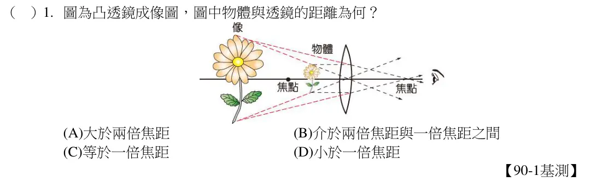
因入射角＝反射角，所以θ2＝θ3，故θ1＝90－θ2＝90－θ3＝θ4。故選(C)。
看題目
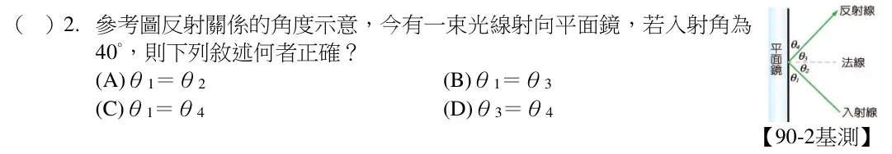
以白光照射玫瑰花，花瓣呈現紅色，此為紅玫瑰花，故以綠光照射時，紅色花瓣無法反射綠光，故呈現黑色。故選(A)。
看題目
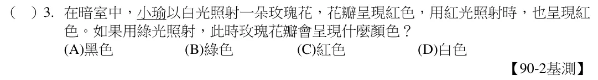
物在凸透鏡一倍至兩倍焦距內時，所成的像為倒立放大實像。故選(C)。
看題目
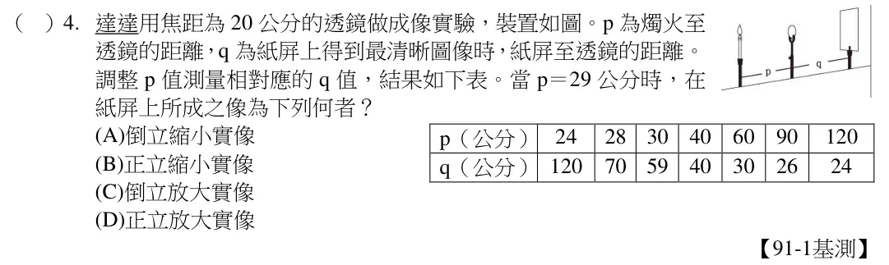
因光的折射方向與光在介質中的速率有關。因c＞a＞b，故光線在三介質中的速率大小關係為丙＞甲＞乙。故選(C)。
看題目
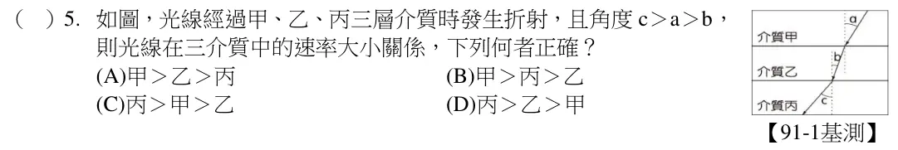
在MO 鏡面上畫出一法線，可得知光線的入射角為50 度，由反射定律可知其反射角亦為50 度。故在含120 度夾角的三角形中，與MO 邊之夾角角度為40 度，與NO 邊之夾角角度為20 度，再引用一次反射定律，得到θ角為
20 度。故選(B)。
看題目
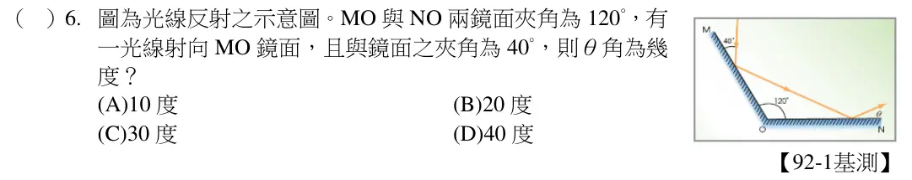
欲將反射光射向P 點時，入射光與反射光夾角增大，法線與入射光的夾角亦增大，故平面鏡需順時針調整。故選(C)。
看題目
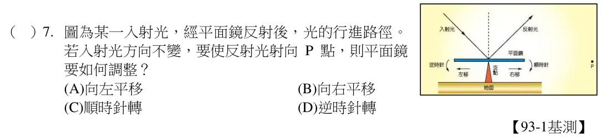
光線在玻璃中速率較慢，故偏向法線（即向內折射），而光線射出玻璃柱時因垂直表面射出，故不折射。故選(B)。
看題目
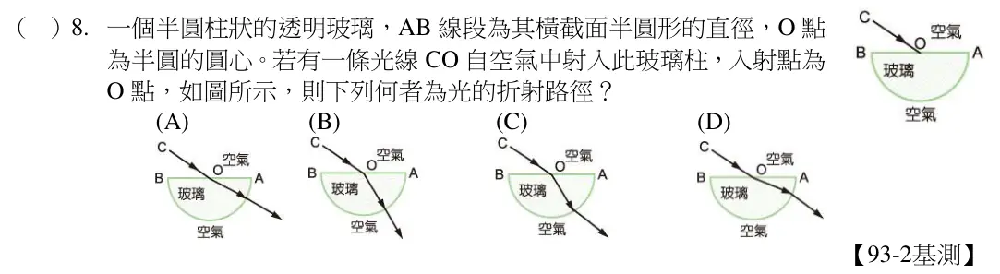
小叮噹的頭原是藍色，照射藍光後仍為藍色；眼珠是黑色，照射藍光後仍是黑色；臉頰是白色，照射藍光後呈現藍色；嘴巴是紅色，照射藍光後呈黑色。故選(C)。
看題目
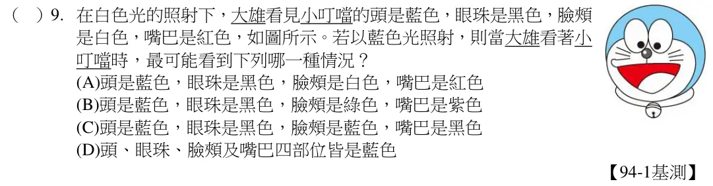
光線在水滴中速率較慢，故入射時會偏向法線（即向內折射）；而從水滴中射出空氣時，光線速率變快，前進方向則會偏離法線。故選(D)。
看題目
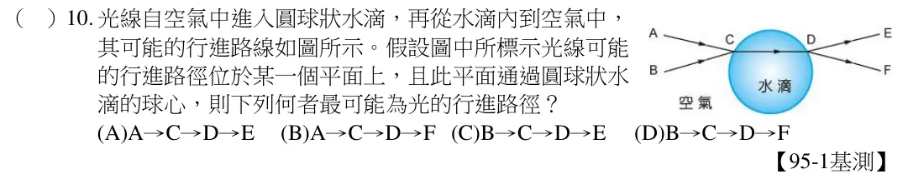
景物發出的光經玻璃的折射，進入人眼，所以人可以透過玻璃看到窗外的景物；而由玻璃反射由人體發出的光，所以人可以藉由玻璃見到自己的影像。故選(B)。
看題目
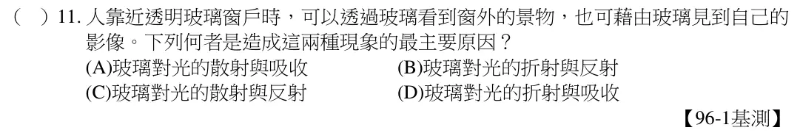
近視眼鏡為一種凹透鏡，會使光線發散，無法聚集光線。故選(D)。
看題目
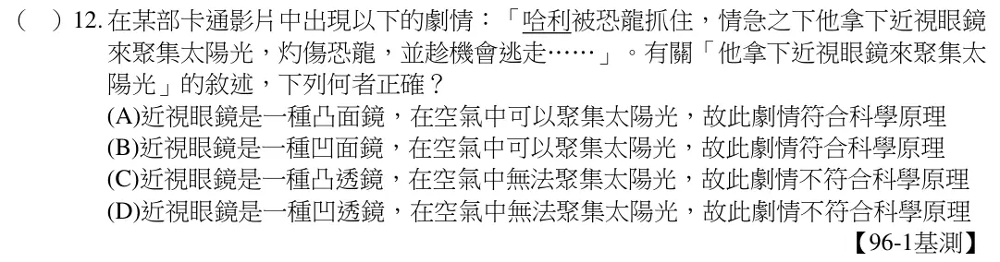
因為入射角等於反射角，故鏡面反射可見的區域內只能看見丙的像。故選(C)。
看題目
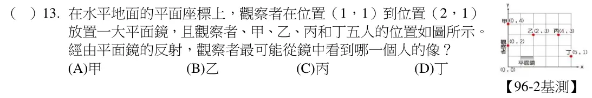
物在凸透鏡的焦距內時，透過凸透鏡觀看可得一正立放大之虛像，是放大鏡之成像原理。故選(A)。
看題目
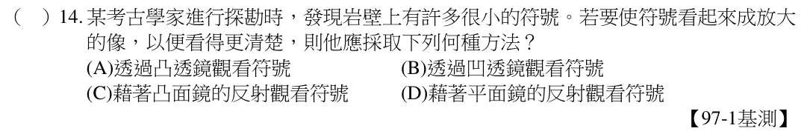
光有直進性，故實際光線聚於內壁，將形成上下顛倒、左右相反之倒立實像。故選(A)。
看題目
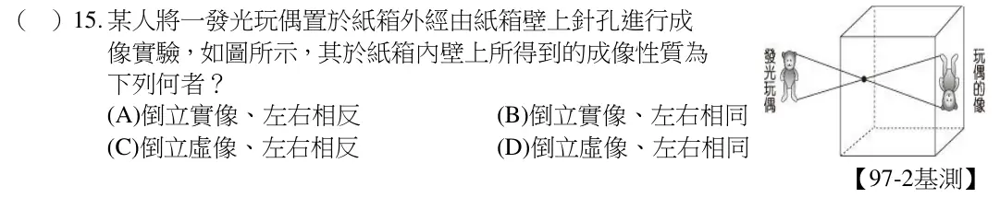
(C)如同平面鏡的反射。故選(C)。
看題目
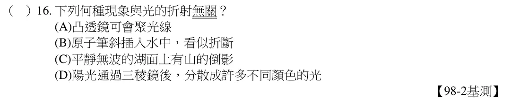
放大鏡是利用凸透鏡的折射成像原理。故選(A)。
看題目
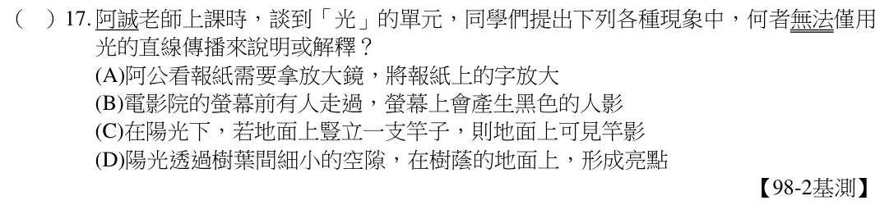
因為空氣中光速大於水中光速，根據折射定律，折射光會偏向法線。故選(B)。
看題目
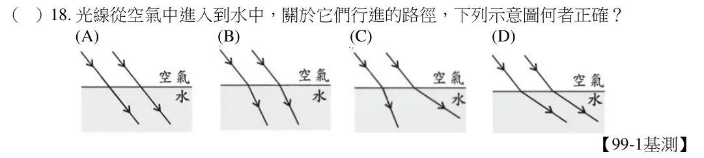
依據反射定律，入射角必等於反射角，且為入射光與反射光和法線的夾角。故選(C)。
看題目
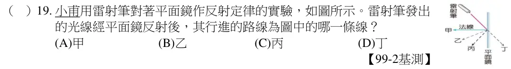
能在紙幕上成像，皆為實像。透過透鏡甲得到倒立縮小的像，表示蠟燭置於兩倍焦距之外，故甲凸透鏡焦距小於5cm；透過透鏡乙得倒立放大的像，表示蠟燭置於一倍焦距至兩倍焦距之間，所以乙凸透鏡之焦距小於10cm。故選(D)。
看題目
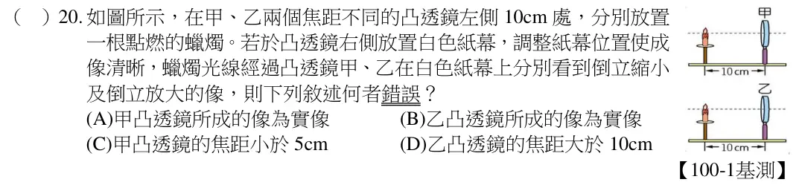
波的反射須符合反射定律，即入射角與反射角相等，當入射線垂直介面入射時，入射角為0°，所以反射角亦為0°。故選(A)。
看題目
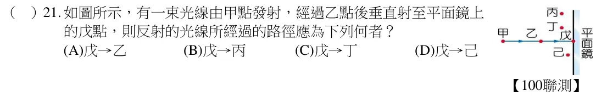
根據光的反射定律，由於紅光的入射角最小，所以反射角也最小，因此照射在白色紙幕上的光點最高；綠光的入射角最大，所以反射角也最大，因此照射在白色紙幕上的光點最低。故選(D)。
看題目
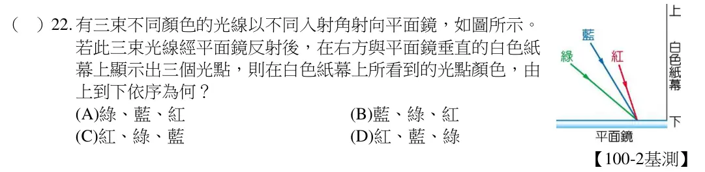
若以綠光照射時，各個國家國旗顏色由上而下的顏色為奧地利：黑、綠、黑，俄羅斯：綠、黑、黑，荷蘭：黑、綠、黑，保加利亞：綠、綠、黑。故選(A)。
看題目
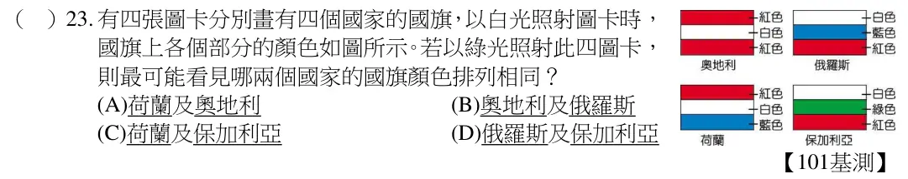
凹透鏡會將光線發散，因此光線在經過凹透鏡後，兩光線間的距離必大於3cm。光由空氣進入水，光的速度會變慢，光會偏向法線，因此當容器注滿水，光射到容器底部的兩光點距離必定小於10cm。故選(C)。
看題目
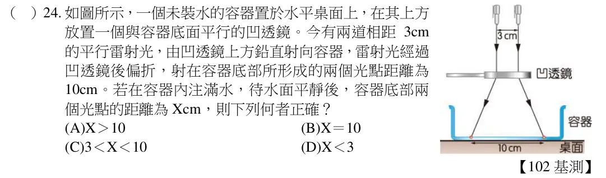
平面鏡所成的像，物距=像距，棋子原來的像位於S，移動後的像則位於P，其移動路徑便為S→P。故選(C)。
看題目
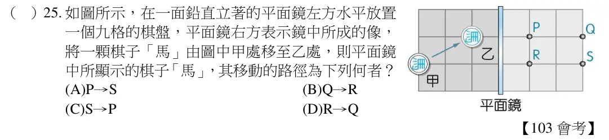
看題目
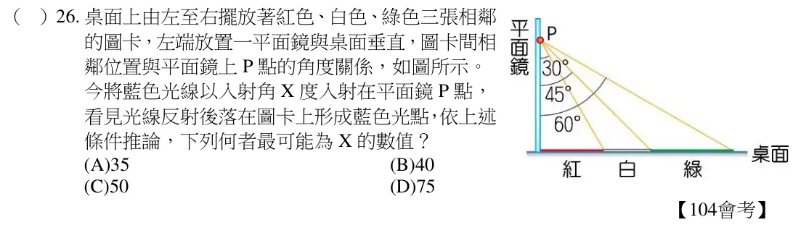
近視眼是由於遠方物體成像在視網膜之前，成因有水晶體焦距太短和眼球球徑太大。模擬步驟2 中，必須使用焦距較短的凸透鏡。故選(A)。
看題目
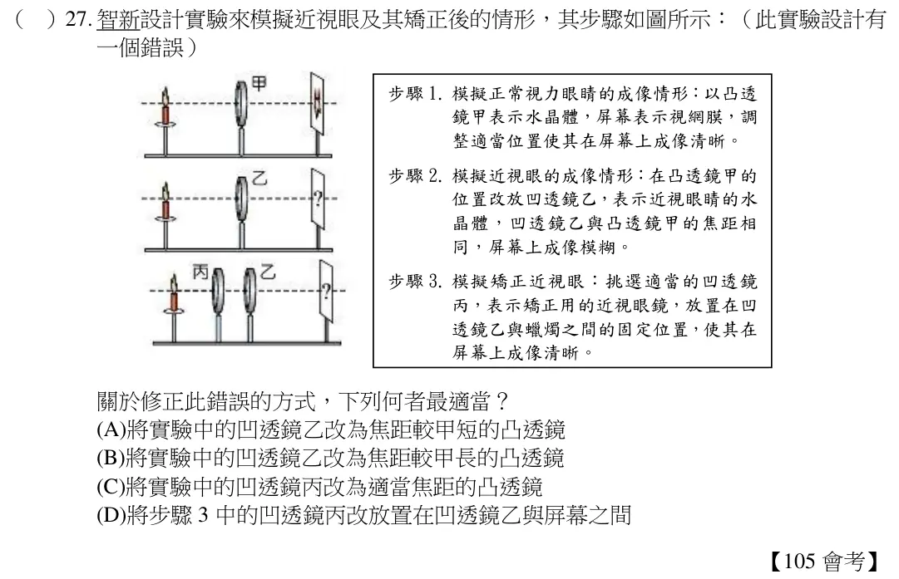
(A)以紅光照射，藍色和綠色部分會呈現黑色，面積為8 + 2 = 10 cm2；(B)以藍光照射，紅色和綠色部分會呈現黑色，面積為4 + 2 = 6 cm2；(C)以綠光照射，藍色和紅色部分會呈現黑色，面積為8 + 4 = 12 cm2；(D)以白光照射，均不呈現黑色，面積為0 cm2。故選(A)。
看題目
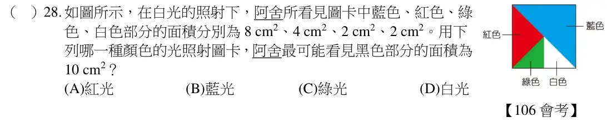
丙區為焦點內側，蠟燭會在同一側形成放大正立虛像，而虛像無法在紙屏上成像，但可由透鏡另一側觀察到。故選(D)。
看題目
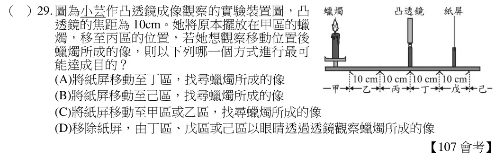
教用版原為第 31 題，本站依題本題號標示為第 30 題。
所成的像為正立縮小的虛像，代表此透鏡為凹透鏡，所以不管蠟燭置於透鏡前何處，只能看到正立縮小虛像。故選(A)。
看題目
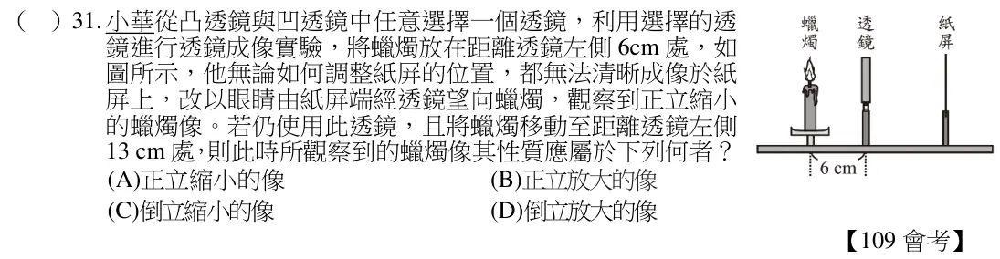
教用版原為第 30 題，本站依題本題號標示為第 31 題。
看題組文章
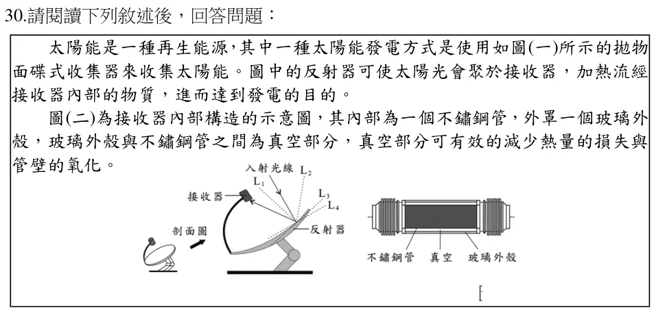
根據反射定律，入射線及反射線必在法線兩側，因此法線應為圖中的L1。故選(A)。
看題目
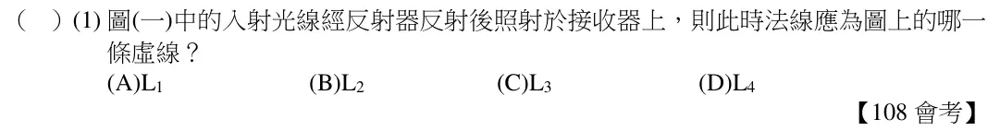
以白光照射單色圖卡只反射紅光，表示此圖卡為紅色圖卡，故以藍光照射紅色圖卡，藍光會被吸收。故選(B)。
看題目
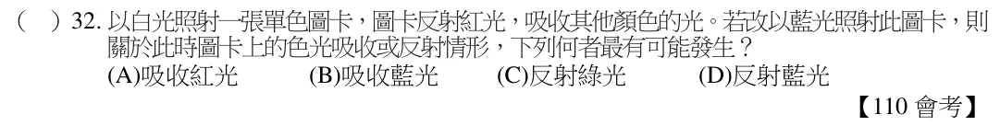
(A)針孔成像是光的直進性造成；(B)(D)是光的折射造成；(C)是光的反射造成的，因此
(B)(C)(D)光的傳播方向均會改變。故選(A)。
看題目
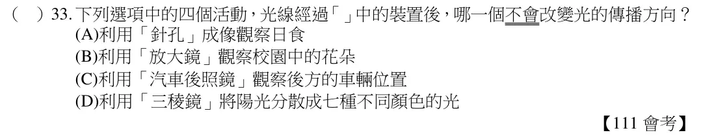
能看見物體，是因光源將光線照在物體之上，然後反射的光進入觀眾的眼睛，因此觀眾才能看見演員。故選(C)。
看題目
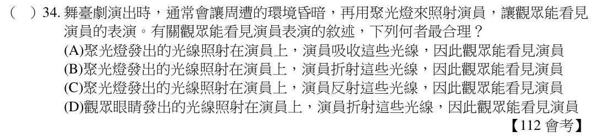
如果光源在焦點上，光穿過透鏡後會相互平行。故選(B)。
看題目
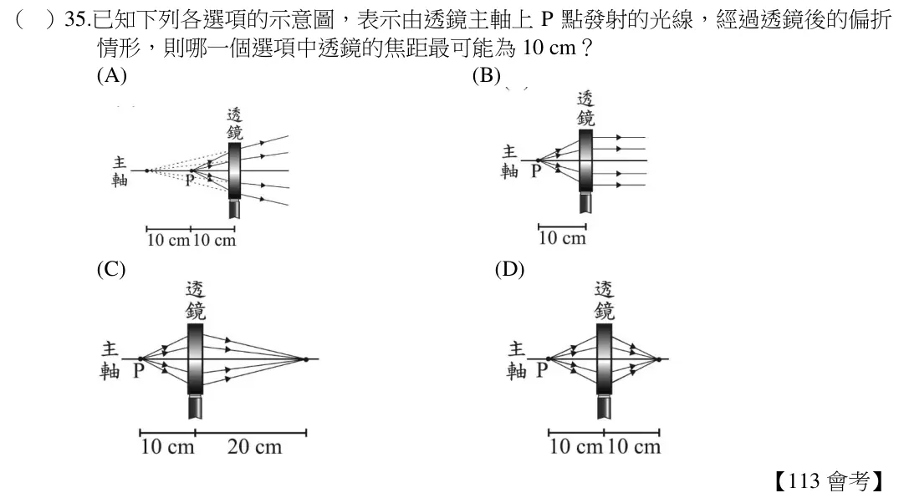
紅光照射下出現紅色，該物體表面可為白或紅，此物體改由白光照射，將呈現白色或紅色。此題最多兩白球或兩紅球。紅光照射下出現黑色，該物體表面可為黑或紅以外的顏色，此物體改由白光照射，將呈現黑色或紅以外的顏色。此題有可能為1 黑球或1 紅色以外的球。(A)可能兩個皆為白球，無紅球；(B)可能無黑球；(D)依題意，無此種可能。故選(C)
看題目
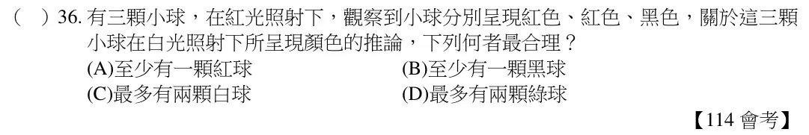